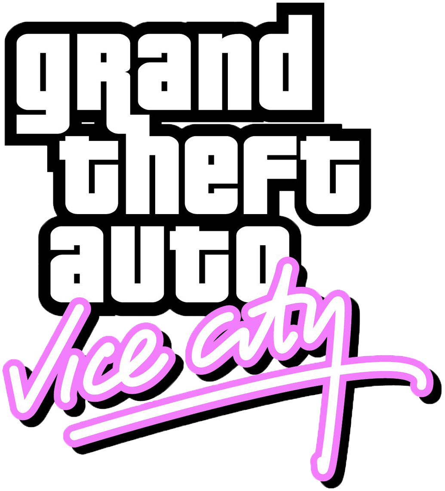

Чит коды для


Опыты над Томми:
PRECIOUSPROTECTION — 100% брони
ASPIRINE — 100% здоровья (также можно "вылечить" пробитые шины и погасить горящее ТС)
THUGSTOOLS — набор оружия киллера-садиста
PROFESSIONALTOOLS — профессиональные орудия убийства
NUTTERTOOLS — все оружие для настоящего психа
YOUWONTTAKEMEALIVE — добавить 2 звездочки WANTED
LEAVEMEALONE — снять все звездочки WANTED
ONSPEED — ускорении игры (двойное ускорение при повторном вводе, деактивирует замедление)
BOOOOOORING — замедление игры (двойное замедление при повторном вводе, деактивирует ускорение)
FANNYMAGNET — женщины любят тебя
BIGBANG — взорвать ближайшие машины
WHEELSAREALLINEED — оставить от машин лишь колеса
ICANTTAKEITANYMORE — закончить жизнь самоубийством
SEAWAYS — можно будет ездить по воде
PROGRAMMER — Томми худеет (не выключаются)
Изменить окружение в ГТА: Вайс Сити
APLEASANTDAY — ясная погода
ALOVELYDAY — романтическая погода
ABITDRIEG — облачная погода
CATSANDDOGS — дождливая погода
CANTSEEATHING — туман
LIFEISPASSINGMEBY — ускорить течение игрового времени (деактивация при повторном вводе)
FIGHTFIGHTFIGHT — народ начинает драться друг с другом
NOBODYLIKESME — прохожие нападают на вас
OURGODGIVENRIGHTTOBEARARMS — выдать толпе оружие (опасно!)
COMEFLYWITHME — пониженная гравитация
GREENLIGHT — все светофоры становятся зелеными
MIAMITRAFFIC — ускорить городской трафик
CERTAINDEATH — закурить
LOADSOFLITTLETHINGS — увеличить шины у спортивных машин
GRIPISEVERYTHING — улучшенное управление машинами
HOPINGIRL — девушки садятся к вам в машину
Коды вызывающие средства передвижения
PANZER — с небес падает халявный танк!
TRAVELINSTYLE — получите Bloodring Banger
THELASTRIDE — гробовозка
ROCKANDROLLCAR — лимузин
RUBBISHCAR — мусоровоз
GETTHEREFAST — Sabre Turbo
GETTHEREQUICKLY — старая гоночная машина
GETTHEREVERYFASTINDEED
GETTHEREAMAZINGLYFAST — раллийная машина
BETTERTHANWALKING — гольф-кар
Изменение скинов
STILLLIKEDRESSINGUP — циклично меняет скин игрока
LOOKLIKELANCE — скин Лэнса Вэнса
MYSONISALAWYER — скин Кена Розенберга
ILOOKLIKEHILARY — скин Хилари Кина
ROCKANDROLLMAN — скин Джеса Торрет
ONEARMEDBANDIT — скин Фила Кессиди
IDONTHAVETHEMONEYSONNY — скин Сонни Форелли
FOXYLITTLETHING — скин Мерседес Кортез
WELOVEOURDICK — скин "шотландца"
CHEATSHAVEBEENCRACKED — скин Рикардо Диаза
Напишите коментарий